HISTORIE
Od kdy lide pijí minerální vodu?
Mattoni si plnými doušky užíváme už přes 150 let. Tuto blahodárnou minerální vodu ale pili naši předci už v 16. století. Víte, který pramen nese královské jméno? Kdy se začala ve skleněných lahvích vyvážet do zahraničí? A kdy se Mattoni stala oficiální vodou Mezinárodního pražského maratonu?
1522
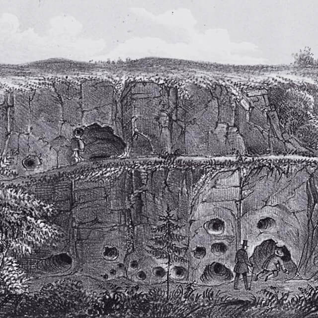
V historických pramenech se objevuje první písemná zmínka o tzv. Bukové kyselce. Je ale pravděpodobné, že lidé znali a využívali minerální pramen už o mnoho století dříve.
1693
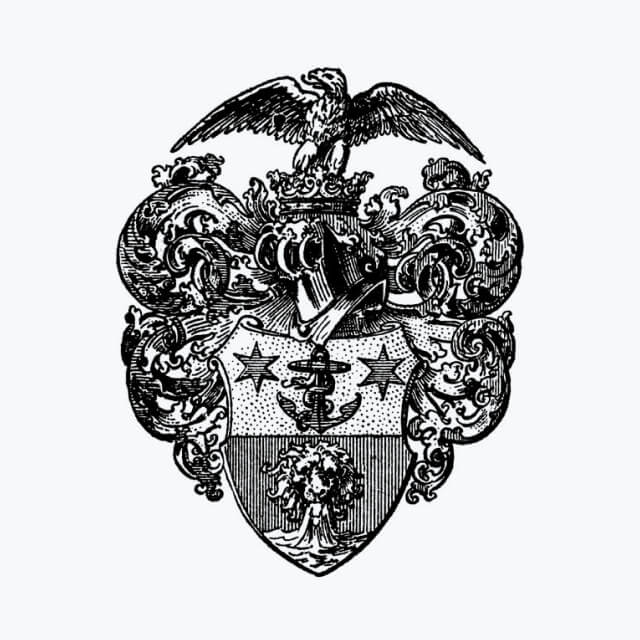
Do Karlových Varů přijíždí z Itálie Ottavio Mattoni, obchodník s citrony. Ve městě se usadí, ožení a zakládá svůj vlastní obchod.
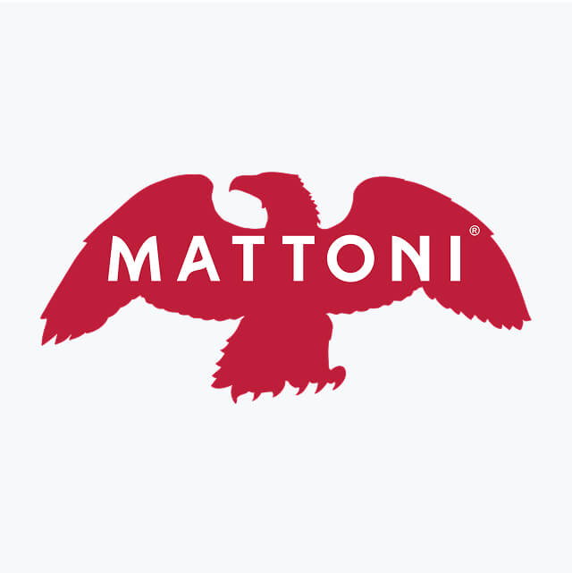
1793
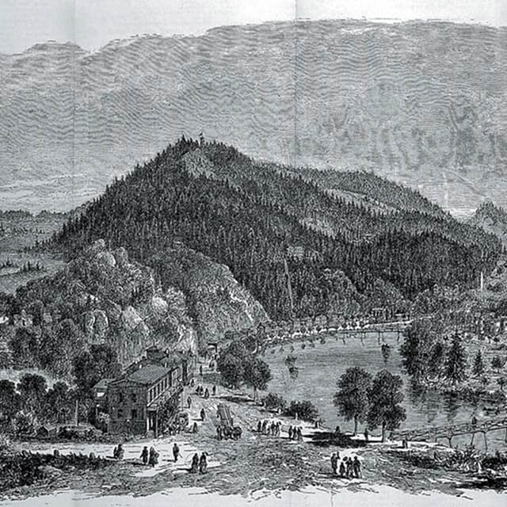
Buková kyselka v kameninových lahvích poprvé vyváží do zahraničí. V přilehlé obci Kyselka začíná skromný lázeňský provoz.
1796
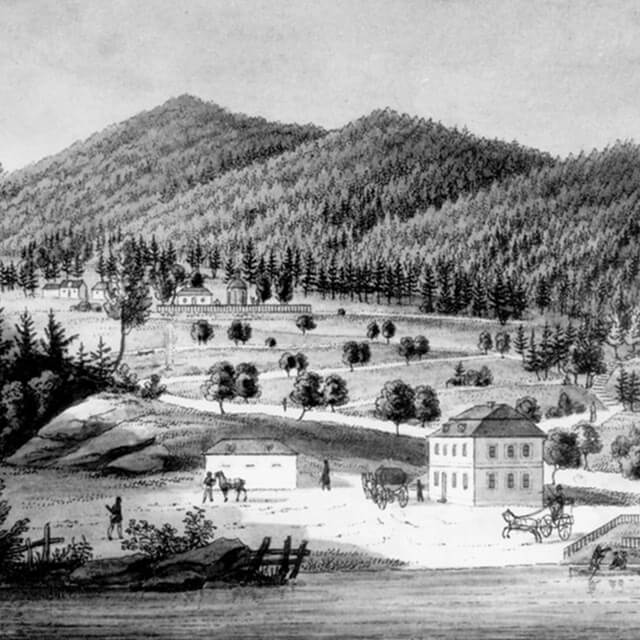
V monarchii jsou založeny první tři prodejní filiálky Bukové kyselky. Minerální vodu si mohli v blízkosti svých domovů dopřát občané Vídně, Prahy a Karlových Varů.
1798
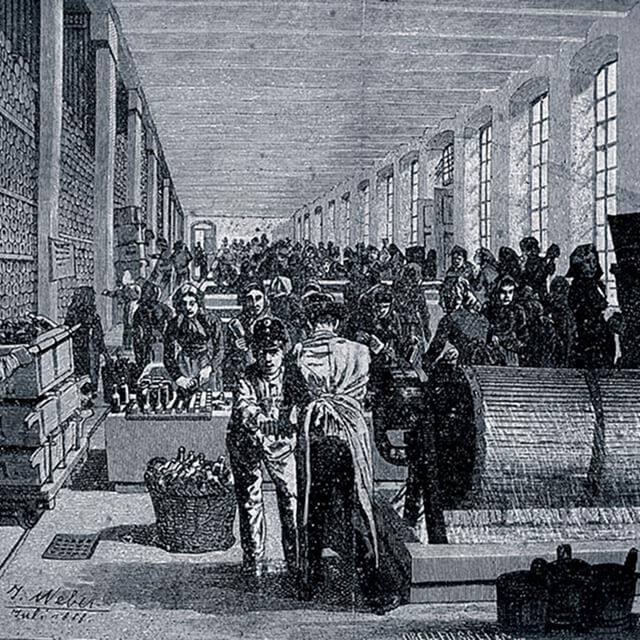
Do Vídně a Budapešti, tehdejších dvou hlavních center monarchie, se koncem 18. století vyváží už kolem 240 tisíc džbánků kyselky ročně.
1829
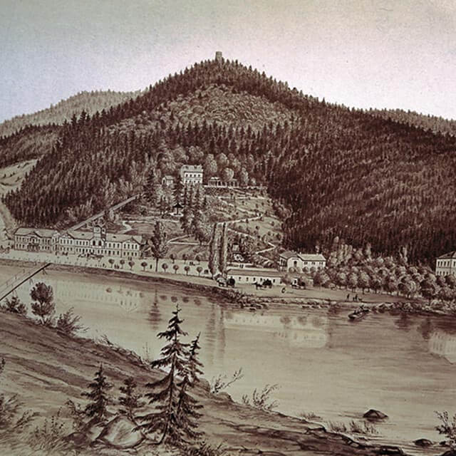
Nový pán Kyselky Wilhelm von Neuberg podniká první kroky pro založení místních lázní. Nechává postavit restauraci, altánek nad pramenem a několik promenád.
1852
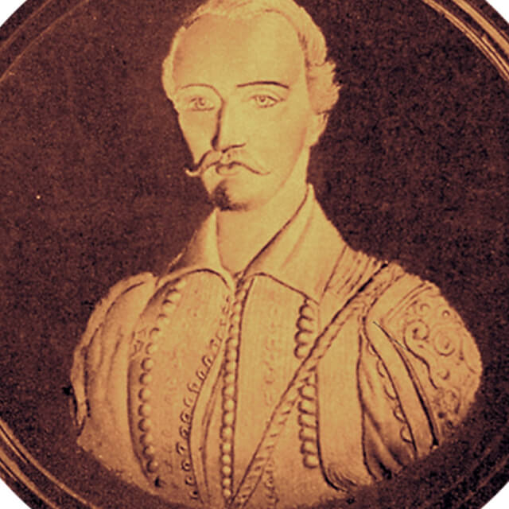
Kyselka hostí vzácnou návštěvu - řeckého krále Ottu I. Na jeho výslovnou žádost je do Athén odesláno prvních 450 džbánků minerálky a hlavní zřídlo od té doby nese královské jméno – Ottův pramen.
1862
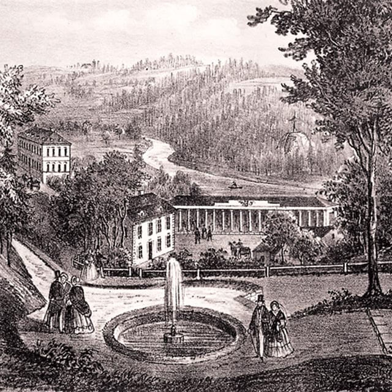
K tomuto datu je v lázních Kyselka evidováno celkem 38 lázeňských hostů na léčení a 7 324 dalších návštěvníků.
1867
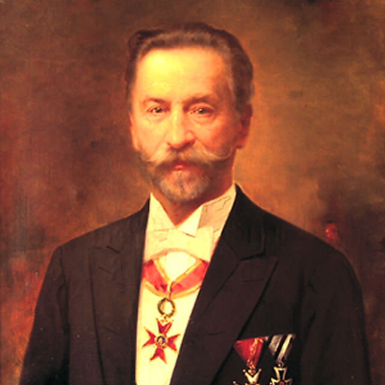
Od pánů z Neubergu si lukrativní pronájem vývozu kyselky pronajímá pokračovatel původně italského rodu sídlícího v Karlových Varech Heinrich Kaspar Mattoni.
1870
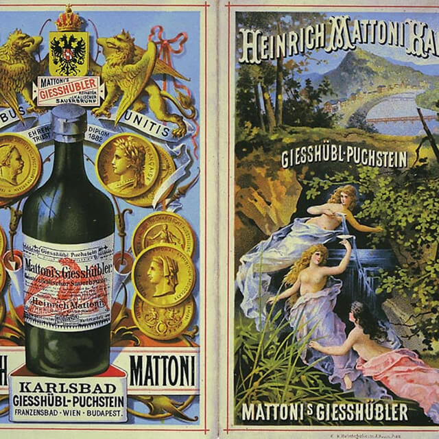
Heinrich Mattoni se díky vyhlášené kvalitě své kyselky stává dvorním dovozcem minerální vody na samotný císařský a královský trůn ve Vídni. Začíná nejslavnější éra kyselky.
1873
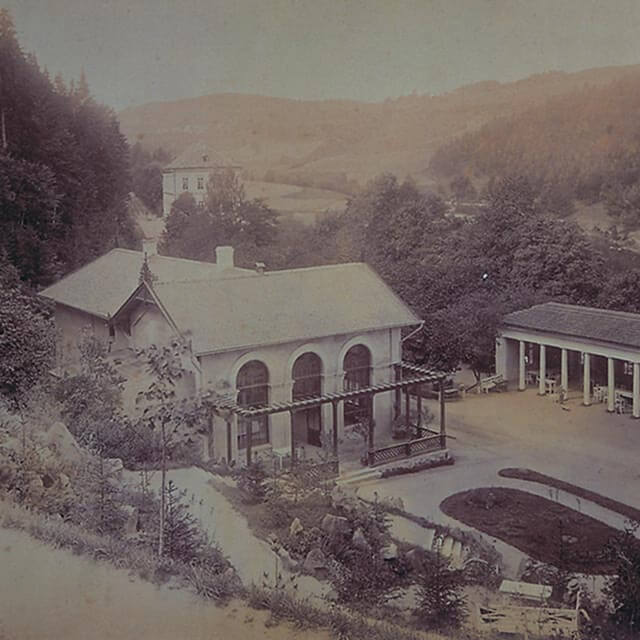
Založena společnost Mattoni. Mattoniho Kysibelka, jak se dříve jmenovala, se stala jednou z nejznámějších minerálních vod světa. Díky jejímu úspěchu se Mattoni rozhodl koupit od hraběte Černína celou Kyselku a vybudovat lázně i místní infrastrukturu.
1874
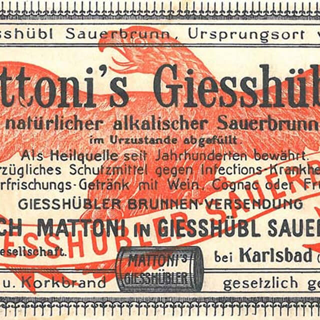
Jako první novinku zavádí Mattoni skleněné lahve s papírovou etiketou. Červený orel na etiketě pochází z rodového znaku Mattoni. Lahve určené do zámoří byly zpevněny drátováním.e
1880
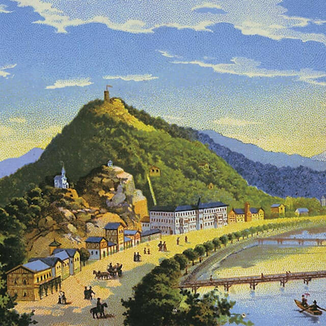
Po necelých patnácti letech péče o kyselku se Ottův pramen řadí mezi nejznámější léčivá zřídla na světě.
1889
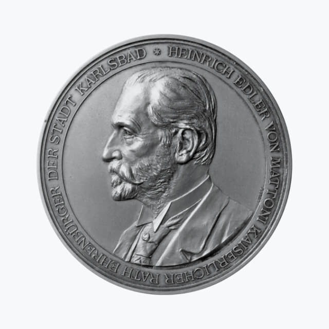
Heinrich Mattoni je za své zásluhy o císařské zdraví a věhlas monarchie po světě povýšen do šlechtického stavu. Je mu propůjčen dědičný titul „svobodný pán von Mattoni“.
1894
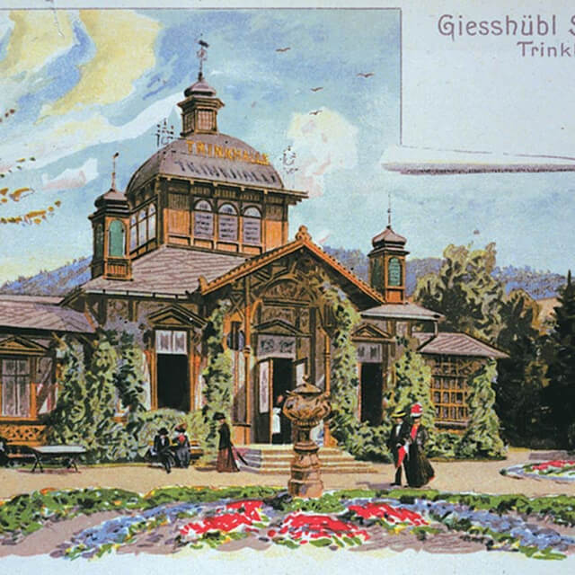
Kyselkou prochází železnice. Díky spojení s obcí Vojkovice rozkvétá místní lázeňské péče.
1895
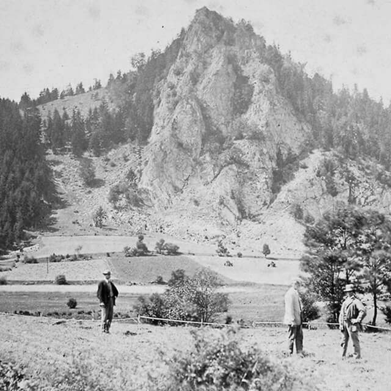
V lázních v Kyselce je na léčení 682 pacientů a pramen navštívilo více než 36 tisíc lidí.
1900
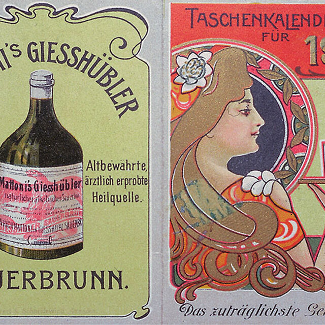
Kyselka je napojena na evropskou železniční síť a přijíždí hosté i ze zahraničí. Na světové výstavě v Paříži kyselka získává ocenění Grand Prix.
1902
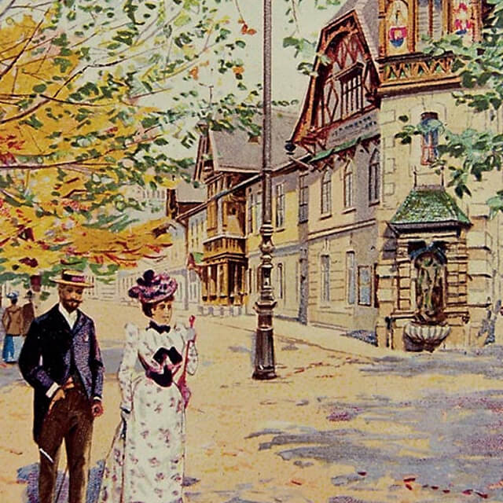
Lázně má v oblibě mnoho zahraničních návštěvníků. V Kyselce se dlouhodobě léčí 11 Rusů, 1 Angličan, 1 Švéd, 1 Srb a 15 Američanů.
1906
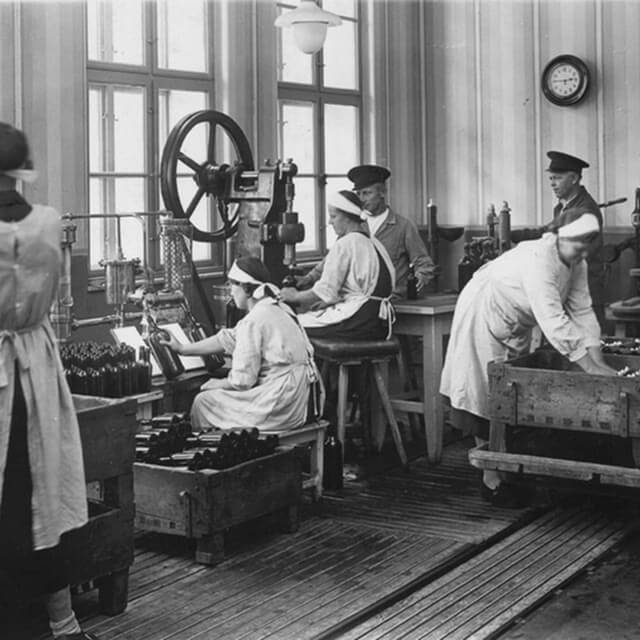
Rozvoj podnikatelských aktivit v Kyselce vyžaduje transformaci podnikání podle moderního střihu počátku 20. století. Je založena Heinrich Mattoni AG, akciová společnost.
1910
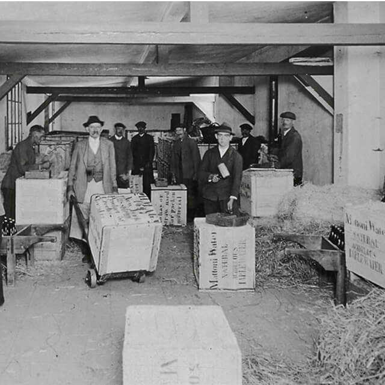
Heinrich Mattoni 14. května umírá. Během svého života dokázal zvýšit export kyselky z 240 tisíc na 10 milionů lahví ročně a udělal z ní jednu z nejlepších značek tehdejšího světa.
1914
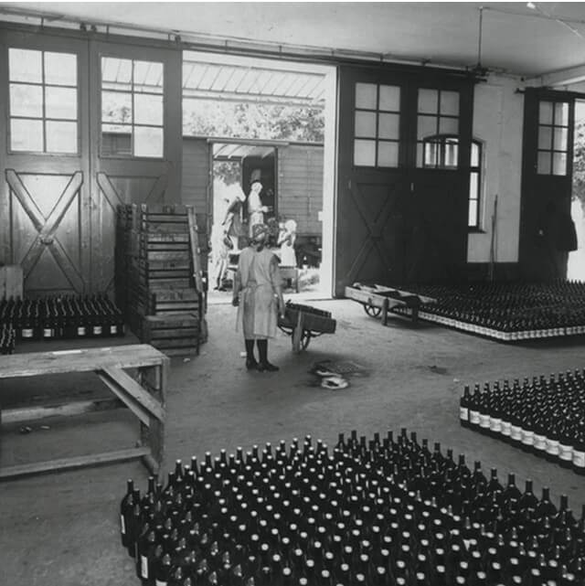
Krátce po smrti Mattoniho končí zlaté období lázeňství. Velká válka, hospodářská krize a druhá světová válka způsobily, že se idyla lázeňské kolonády už nikdy nevrátila v plné síle.
1945
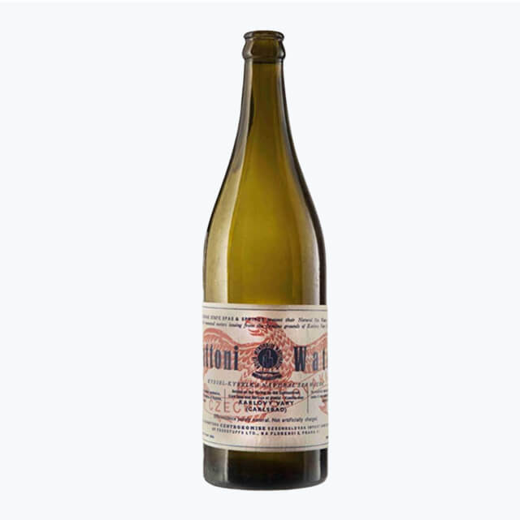
Trápení nekončí ani s koncem druhé světové války. Zasilatelství minerální vody je hned po válce znárodněno a přechází pod podnik Západočeská zřídla.
1967
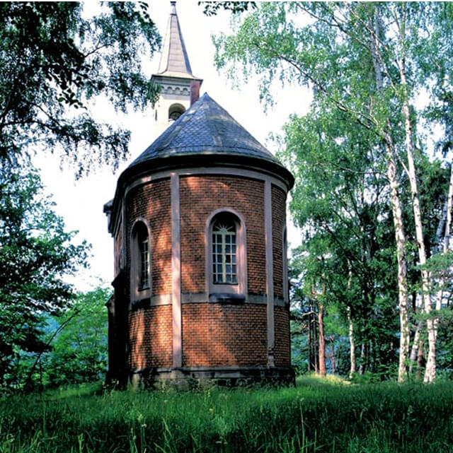
V místní kapli sv. Anny byla objevena kovová schránka s dokumenty z roku 1884. Listiny obsahovaly poselství dalším generacím – seznamy lázeňských hostů, dobové mince, nebo publikace o Kyselce.
1970
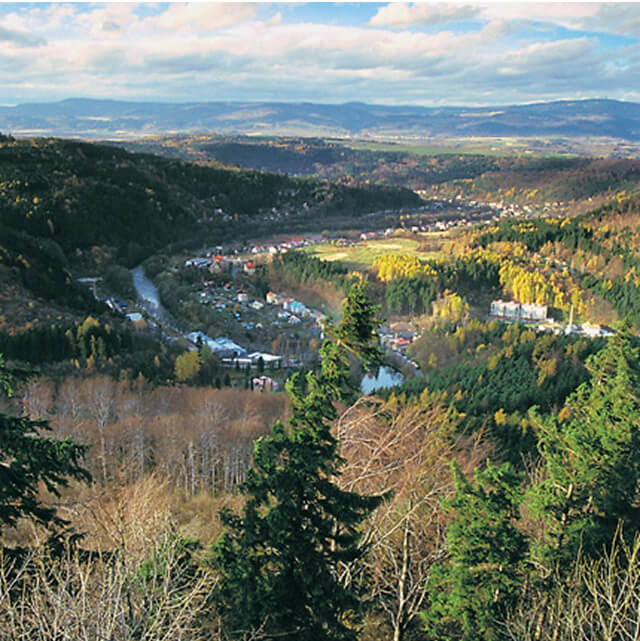
Bývalé lázně se stávají léčebným zařízením pro děti ze severozápadních Čech. Léčí se zdravotními problémy, které způsobuje špatné životní prostředí.
1989
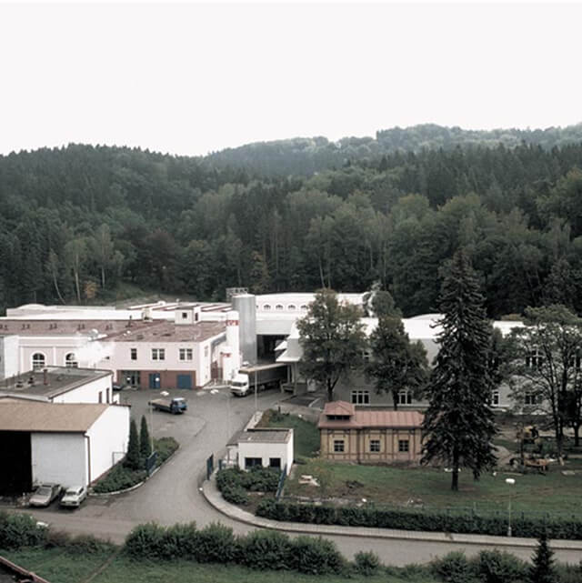
Po revoluci svítá nová naděje. Podnik Západočeská zřídla s nově vybudovanou stáčírnou se mění na Karlovarské minerální vody. Lázeňská péče v Kyselce ale definitivně zaniká.
1994
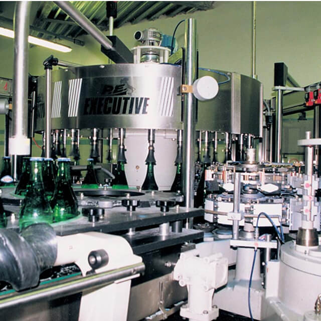
Dochází k privatizaci podniku. Novým majitelem se stává italská podnikatelská rodina Pasquale a podnik se vrací k česko-italské tradici. Rodina výrazně modernizuje stáčecí závod.
1995
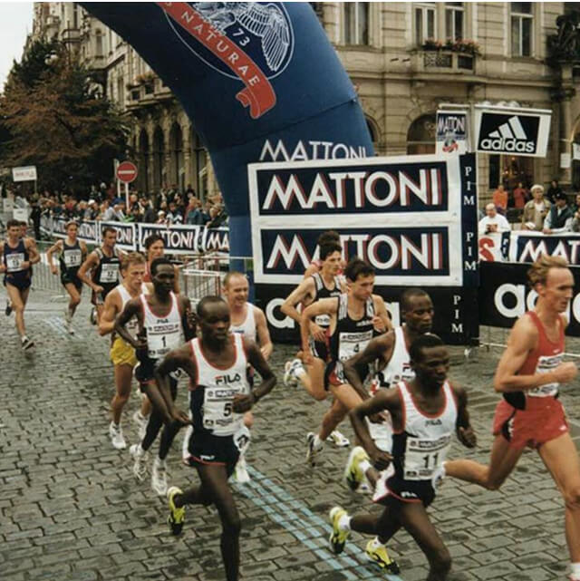
Mattoni se stává oficiální vodou Mezinárodního pražského maratonu. Jedná se o jedno z prvních partnerství, kterým se Mattoni znovu snaží přispívat ke zdravějšímu životu v Česku.
1996
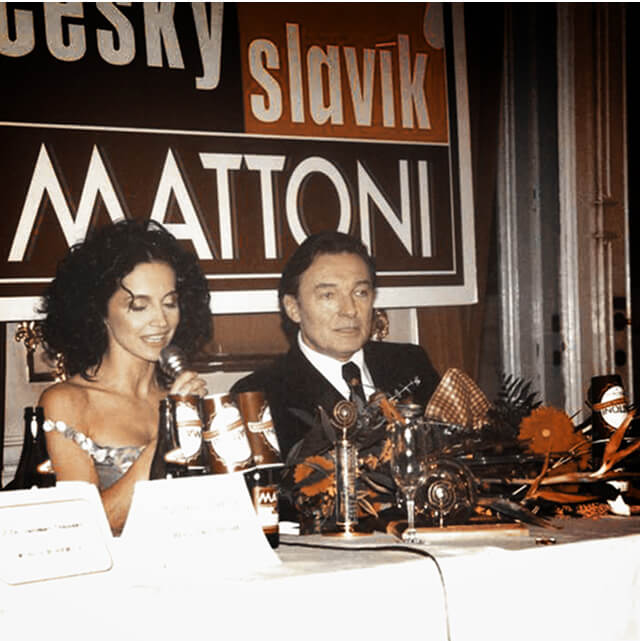
Je obnovena anketa Český slavík a Mattoni se stává novým generálním partnerem.
1998
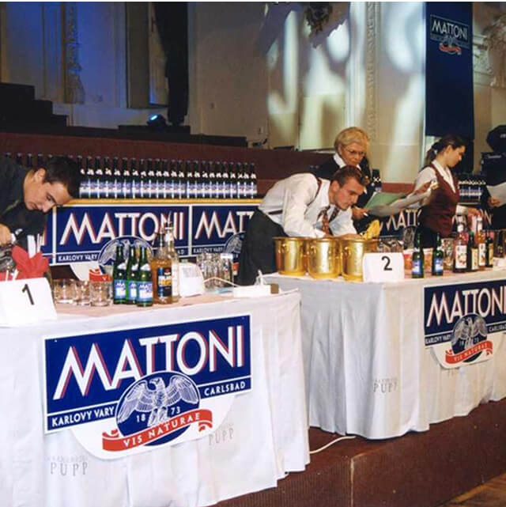
Koná se 1. ročník soutěže v míchání nealkoholických koktejlů Mattoni Grand Drink. Postupem času se soutěž stane oficiálním mistrovstvím světa.
1999
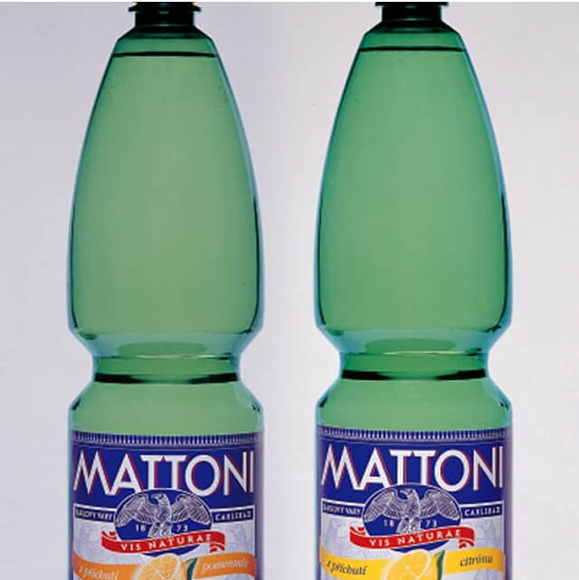
Mattoni uvádí na trh novou řadu ochucených perlivých minerálních vod. Prvními příchutěmi se stávají Mattoni citron a pomeranč.
2004
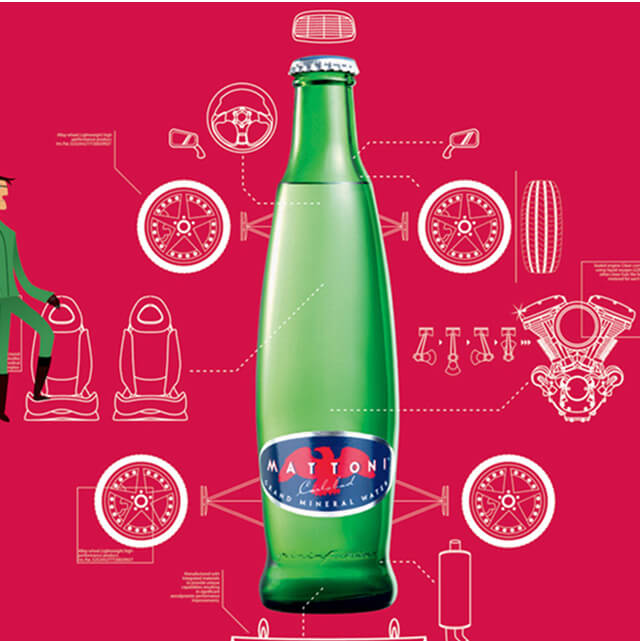
Italské studio Pininfarina, které navrhlo i design vozů Ferrari, propojilo italské kořeny Mattoni s prožitkem při pití. Díky tomu vznikla naše nová láhev Mattoni.
2005
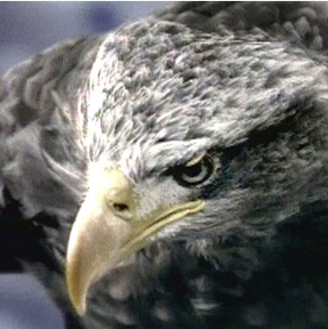
Mattoni podporuje program „Návrat orla skalního do ČR“. Orel je tradičním symbolem značky už od Heinricha Mattoniho a zároveň symbolem snahy o ochranu přírody.
2023
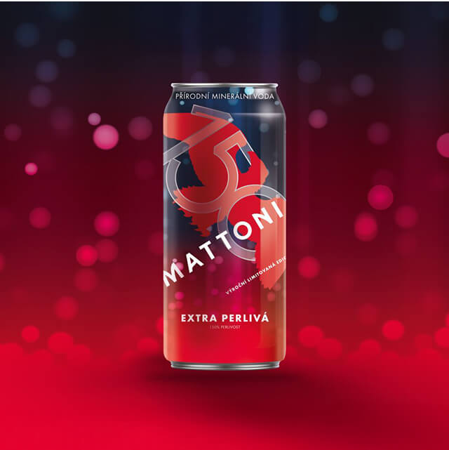
Mattoni slaví 150. narozeniny. Heinrich Mattoni totiž odkoupil oblast Kyselky i s populárním Ottovým pramenem v roce 1873.